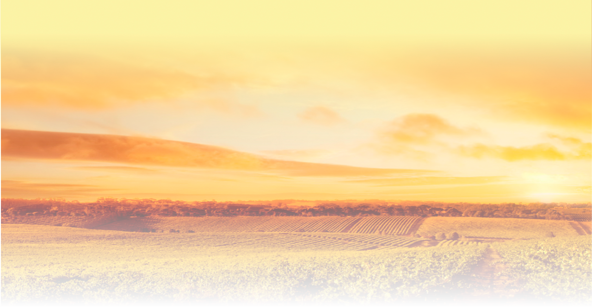

Ресторан "Алазанская долина"
Ресторан грузинской кухни с панорамным видом на Кутузовский
проспект. Слово «благородный» как нельзя лучше характеризует
интерьер заведения: стильная мебель, хрустальные люстры,
бронзовые элементы декора и лепнина. Помимо фирменныз
блюд с мангала и печи, учитывая тренды Москвы, в меню
добавлены блюда европейской и японской кухни.
Приятным дополнением к трапезе станет ароматный паровой
коктейль. А для особых торжеств есть vip комната на 15-18
человек.
Ресторан грузинской кухни с панорамным видом на Кутузовский
проспект. Слово «благородный» как нельзя лучше характеризует
интерьер заведения: стильная мебель, хрустальные люстры,
бронзовые элементы декора и лепнина. Помимо фирменныз
блюд с